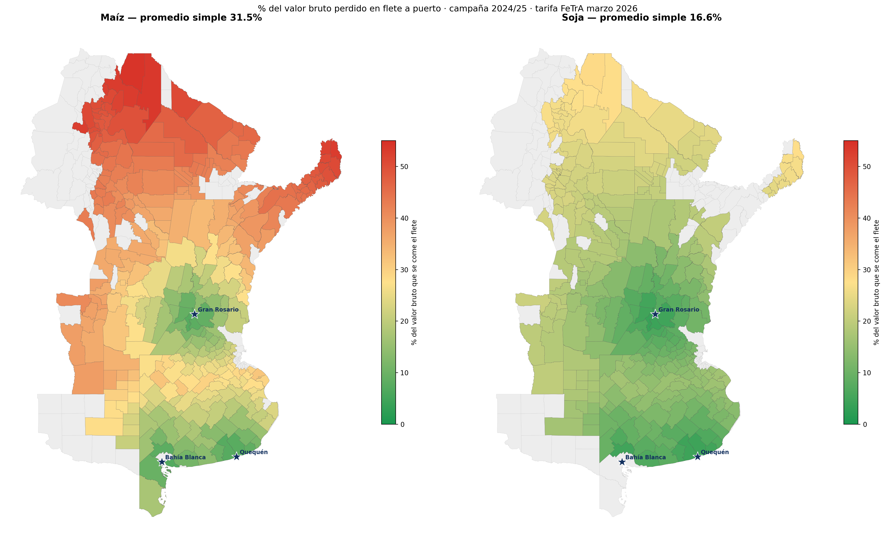
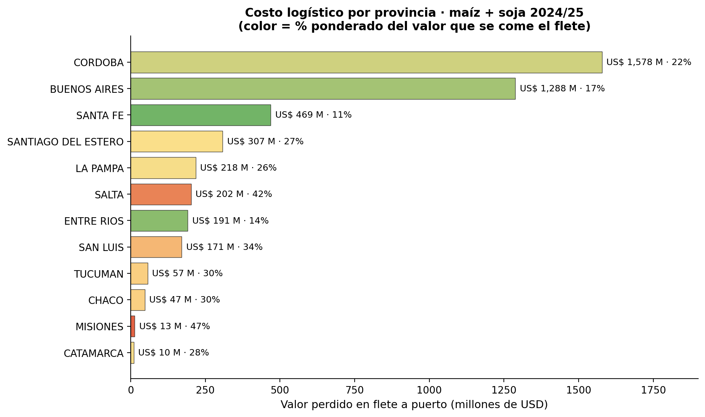

Análisis geoespacial · campaña 2024/25
Cuánto del valor de la cosecha se lo lleva el flete a puerto
Verde: el flete pesa poco sobre el valor. Rojo: se lo come. Escala común 0–55 % para comparar ambos cultivos. El maíz escala hacia el rojo mucho antes que la soja: no porque viaje más lejos, sino porque su menor precio por tonelada amplifica el peso relativo del mismo flete.

Pasá el cursor sobre cualquier departamento para ver su distancia a puerto, el puerto asignado y el valor neto por tonelada. El control de capas alterna entre maíz y soja.
Traducido a dinero, el ranking se ordena por volumen: Córdoba y Buenos Aires concentran el mayor costo logístico absoluto pese a tener porcentajes moderados. Salta y Misiones muestran las intensidades más altas, aunque su bajo volumen limita el monto total. Los montos son órdenes de magnitud a tarifa de referencia y tipo de cambio de fin de marzo.

Los seis departamentos más golpeados por el flete y los seis más protegidos por su cercanía al puerto.
| Departamento | Provincia | Cultivo | Distancia | % flete |
|---|---|---|---|---|
| General Jose De San Martin | Salta | Maíz | 1397 km | 54.3% |
| Rivadavia | Salta | Maíz | 1360 km | 53.7% |
| General Manuel Belgrano | Misiones | Maíz | 1322 km | 53.0% |
| Oran | Salta | Maíz | 1321 km | 53.0% |
| Cachi | Salta | Maíz | 1304 km | 52.6% |
| Valle Grande | Jujuy | Maíz | 1293 km | 52.4% |
| Departamento | Provincia | Cultivo | Distancia | % flete |
|---|---|---|---|---|
| San Lorenzo | Santa Fe | Soja | 42 km | 3.7% |
| Rosario | Santa Fe | Soja | 53 km | 4.2% |
| Necochea | Buenos Aires | Soja | 57 km | 4.3% |
| Loberia | Buenos Aires | Soja | 61 km | 4.4% |
| Victoria | Entre Rios | Soja | 68 km | 4.7% |
| Tornquist | Buenos Aires | Soja | 70 km | 4.8% |
Metodología completa, caveats y tablas detalladas en el informe ejecutivo.